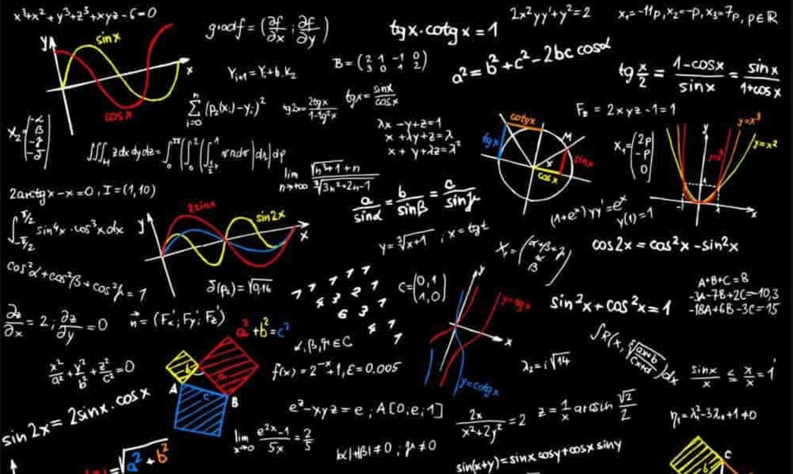

Maths
Les mathématiques en enseignement de spécialité en classe de première permettent de voir de grands chapitres comme l’algèbre, l’analyse, la géométrie, les probabilités et les statistiques, l’algorithmique et la programmation. Un programme complet mais aussi très chargé

Utile ?
Pour certains, les mathématiques, c’est la vie. Pour d’autres, les maths représentent une matière inutile et compliquée. Pourtant, les maths sont belles et bien utiles dans la vie de tous les jours.
Selon un chercheur en sociologie de la Northeastern University, dans le Massachusetts aux États-Unis, 94 % des salariés ont besoin des mathématiques dans leurs activités professionnelles.
Choisir l’enseignement de spécialité maths n’est pas uniquement bon à être mis sur une fiche pédagogique ou un CV. Choisir l’enseignement des mathématiques c’est avant tout se préparer aux études supérieures.
NSI
Face à la place grandissante du numérique et de la digitalisation dans nos sociétés, l’initiation de l’informatique au lycée est devenue fondamentale. Longtemps négligée par l’enseignement, surtout en France, l’informatique occupe aujourd’hui une place essentielle dans l’apprentissage.
Au lycée, les élèves approfondissent leurs connaissances en entrant dans le monde de la science informatique. Ils apprennent alors à maîtriser les différents concepts comme la programmation, les systèmes de bases de données, les algorithmes…
A quoi sa sert ?
Il est évident que l’informatique et le numérique prennent de plus en plus de place dans notre quotidien. Savoir maîtriser l’informatique et comprendre le numérique deviennent incontournable aussi bien dans notre vie privée que dans notre vie professionnelle. Et tous les secteurs d’activité sont concernés. Les enjeux de l’apprentissage de l’informatique à l’école sont donc importants.
SI
Les sciences de l’ingénieur mobilisent les approches scientifiques et technologiques des élèves afin de résoudre des problèmes simples liés à des cas concrets de la société moderne. On y aborde des domaines tels que la robotique, l’environnement, le sport, l’habitat, la bionique, l’énergie etc..
Il permet de constituer une large base de connaissances scientifiques et technologiques.
Ainsi, les élèves sont évalués sur leurs compétences à analyser :
- l’organisation fonctionnelle et matérielle d’un produit
- les échanges d’énergie, les transmissions de puissance, les échanges et le traitement des informations
- les écarts entre les performances attendues, simulées ou mesurées
Vous aimez imaginer des systèmes pour résoudre un petit problème du quotidien ou plus globalement répondant aux enjeux sociétaux de demain ? Vous êtes curieux de connaître comment un système ou un produit fonctionne ? Et bien vous devriez sûrement choisir la spécialité SI au lycée.